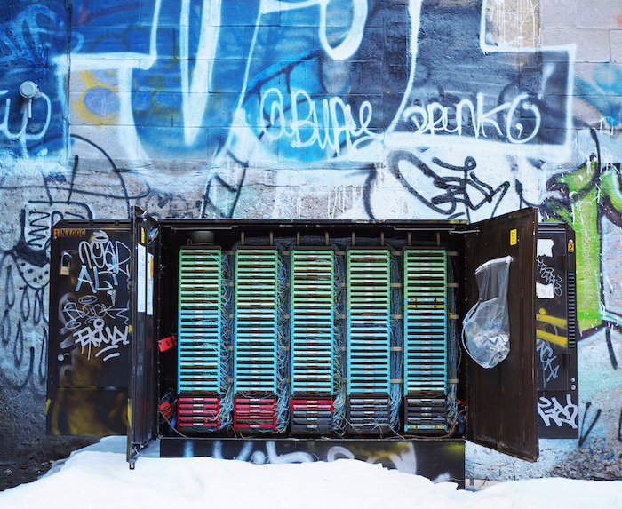
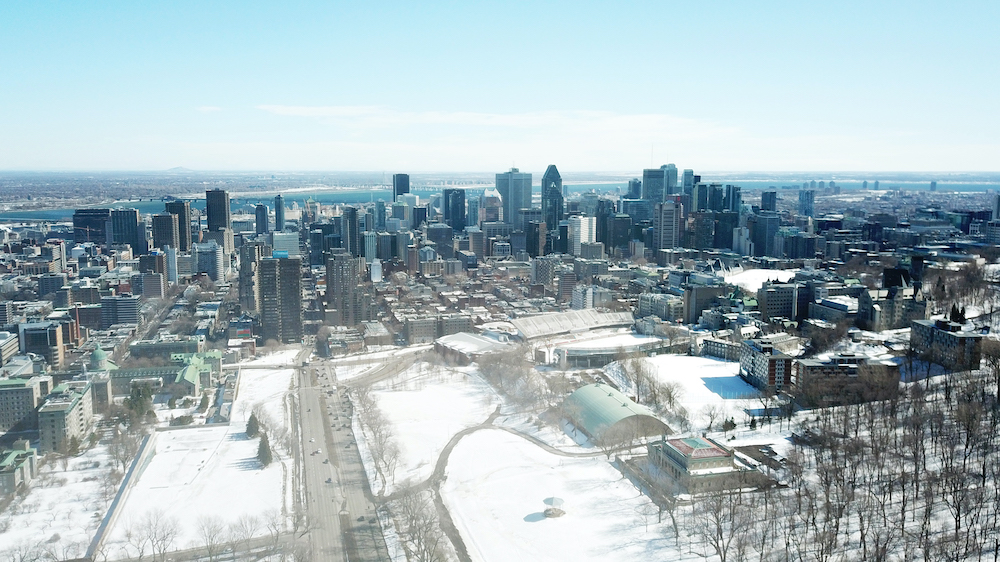
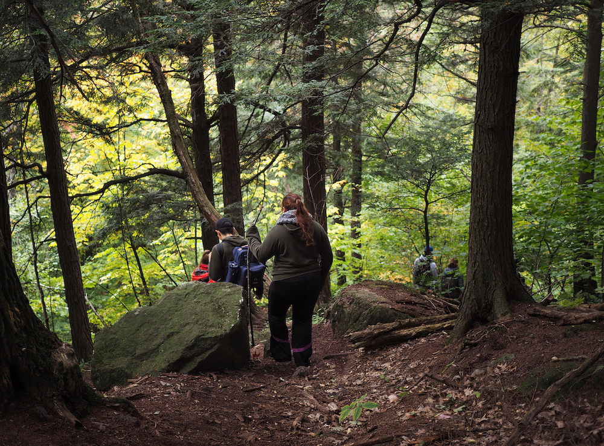

Montréal, Québec
Montréal is the only fully bilingual city in the French Canadian province of Québec, and it's known for its diversity, art, and the never-ending construction. Mount Royal - the 230m mountain within the city from which the city gets its name - allows for a quick escape into nature with stunning views of Montreal from the top. In the winter, Beaver Lake on the summit is turned into a skating rink which you can get to by cross-country skiing up along the mountain, if you're feeling adventurous!
Things to Do
Zero Gravity Rock Climbing
Paragym
Le Magasin Général du Vieux-Montréal
The Montreal Museum of Fine Arts
Montreal Science Centre
La Ronde Amusement Park
Parc La Fontaine
Mount Royal
A/MAZE: Escape Game
Syn Studio: Art School
Eva B: Funky Second-Hand Store
Casa Del Popolo: Live Music Venue
Hundreds of kilometers of alleyways filled with art connect this vibrant city.
Restaurants & Cafés
La Banquise
Qing Hua
La Khaïma Cuisine Nomade
Darbar
Amelia's
Kafé Kafta
Omnivore
Patati Patata Friterie de Luxe
Anticafé (Coworking)
Dieu du Ciel!
Le 4e Mur: Murder-Mystery Bar
l'Escalier
Cacao 70
Fairmount Bagels


Every winter, an 'ice bridge' opens just west of the island of Montreal. Usually all through January and February, you can drive or walk across the frozen Lake of Two Mountains which separates the towns of Hudson and Oka.
My never-ending obsession with rock climbing!
Photo credit to Ges & Nina
Outside of the City
Mauricie National Park
Ski Saint Sauveur
Sommet Morin Heights
Ski Mont Vallée Bleue